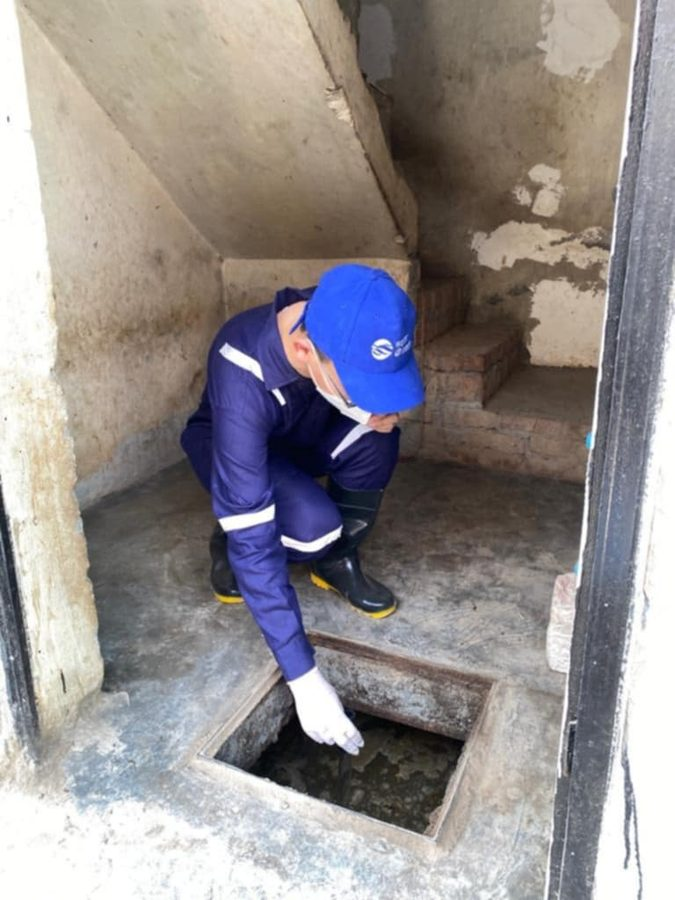

We work across the whole sanitation service chain, from containment at the toilet to emptying, transport, treatment, and reuse, and across the technical, financial, institutional, and political decisions that determine whether a city's waste management system protects its people or harms them. Our work reaches from Leeds into national sanitation planning across the Global South, into a Lancet Commission reshaping global WASH policy, and into questions of water and sanitation poverty much closer to home.

Why It Matters
For seventy years, urban sanitation planning defaulted to one answer: conventional sewerage. Sewers are expensive and slow to build, and in most fast-growing cities of the Global South they serve only a fraction of the population. The majority relies on pit latrines, septic tanks, and on-site systems that no municipal authority planned, funded, or emptied safely. The waste of millions was, in effect, invisible to the institutions meant to manage it.
Our research made that waste visible. Three convictions drive our current work. First, sanitation is a problem of systems, evidence, finance, and politics at least as much as engineering, and progress comes from giving decision-makers an honest picture of an entire city. Second, the sector's long focus on cheap household-level fixes has reached its limits; the real task is building public service institutions capable of delivering safely managed sanitation to everyone. Third, water and sanitation insecurity is not confined to low-income countries — real failures of affordability, access, and dignity also occur in high-income countries, including the UK.
Our Impact at a Glance
- Over US$1.1 billion in urban sanitation investment informed across more than 100 cities worldwide
- 2.4 billion people live in countries where national sanitation planning embeds diagnostic tools co-developed at Leeds
- Directly underpinned the shift to "safely managed sanitation" in UN Sustainable Development Goal Target 6.2
- Over 8,000 municipal, utility, and government professionals trained globally
- Active field and policy programmes across Uganda, Tanzania, India, Indonesia, Nepal, Bangladesh, Mozambique, and Colombia
What We Do
Making sanitation visible
The Shit Flow Diagram (SFD), co-developed by Professor Barbara Evans and Professor Andy Sleigh with international partners including the World Bank, GIZ, Eawag/Sandec, CSE India, and WaterAid, sits at the centre of this work. The SFD shows in a single graphic how much of a city's faecal waste is managed safely and how much is discharged untreated into the environment, pinpointing where along the service chain the system fails. India, Indonesia, and South Africa have built SFDs into national sanitation planning, and the framework underpins Citywide Inclusive Sanitation (CWIS) globally.
Sanitation and the climate
Sanitation systems are both a significant, under-quantified source of greenhouse gas (methane and nitrous oxide) emissions and on the front line of climate impacts. Through the EMISI programme in Indonesia and fieldwork in India and Uganda, our team measures greenhouse gas emissions from septic tanks and pit latrines, links them to underlying microbiological processes, and compares the carbon and financial costs of sanitation options. Dr Zhe Zhan combines field pathogen sampling in India and Uganda with multiphase computational fluid dynamics (CFD) to model how floodwater inundates pit latrines and septic tanks during extreme rainfall events.
Systems, institutions, regulation and why services fail
Sanitation succeeds or fails on human and institutional systems as much as physical ones. Dr Paul Hutchings, Associate Professor in Water, Sanitation and Health, examines how governance, public finance, and organisational arrangements shape transitions from informal household self-supply to regulated municipal services. He leads the five-year FCDO programme WASH Systems for Health (running to 2028) and RESHAPE on the resilience of health and WASH systems after extreme weather events.
Claire Grisaffi, Lecturer in Water, Sanitation and Health, investigates the regulation, formalisation, and working conditions of faecal sludge emptying and transport services in low- and middle-income cities. Ruth Sylvester, Research Fellow in Data Governance and Global Health, works on municipal data governance and health-system resilience in both global and UK settings.
Water insecurity at home
Water poverty is not only a Global South story. Roughly a fifth of households in England and Wales have experienced water affordability pressures in recent years. Our research on lived experience, affordability, and regulatory policy brings the same systemic lens to the UK water sector that we apply internationally.
Treatment, reuse and the circular economy
Safe sanitation does not end when a pit is emptied. Dr Miller Alonso Camargo-Valero, Associate Professor of BioResource Systems, leads research on faecal sludge and wastewater treatment and on recovering energy, water, and nutrients from what those systems collect, linking this theme directly to our work on BioResources and the Circular Economy.
Leadership, Impact and Partnerships
Professor Barbara Evans serves as Co-Chair of the Lancet Commission on Water, Sanitation and Hygiene, and Health, sits on the Strategic Advisory Group of the WHO/UNICEF Joint Monitoring Programme (JMP), and serves on the Royal Academy of Engineering's International Committee. Emeritus Professor Jamie Bartram, former coordinator of Water, Sanitation, Hygiene and Health at the World Health Organization, continues to contribute to global WASH policy scholarship at Leeds.
Our work is built on long-standing partnerships with the World Bank, the Bill & Melinda Gates Foundation, WHO, UNICEF, FCDO, DFAT/KIAT, and WaterAid, and sits within water@leeds and the Centre for Global Development.
Study With Us
We train sanitation and WASH engineers and practitioners through our cross-faculty MSc in Water, Sanitation and Health Engineering, led by Dr Paul Hutchings and taught jointly with the Nuffield Centre for International Health and Development, and through doctoral supervision across the theme. We welcome enquiries from prospective PhD researchers with backgrounds in civil and environmental engineering, microbiology, environmental science, social science, and public health.
Work With Us
If you are a government ministry, municipality, funder, utility, or NGO working on sanitation and hygiene, or a researcher looking to collaborate, we would like to hear from you.